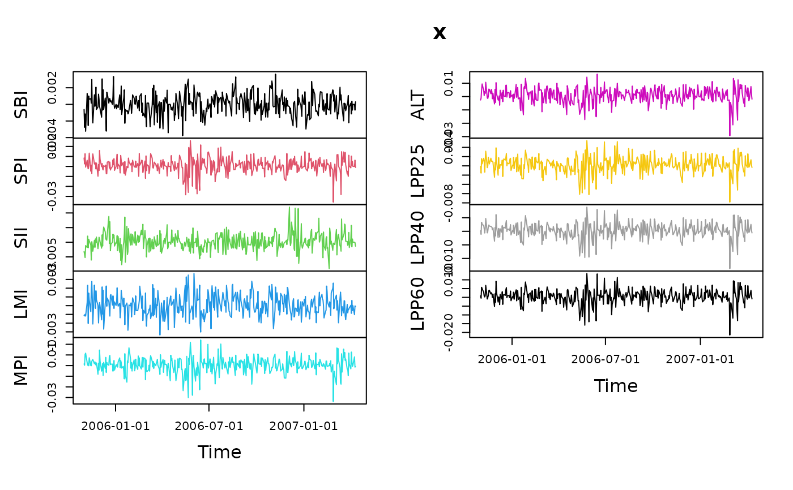
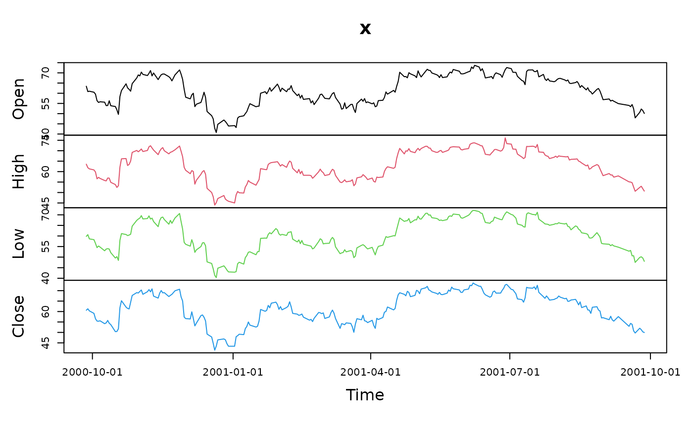

Time series data sets
data-examples.RdThree data sets used in example files.
Details
The following datasets are available:
- MSFT
Daily Microsoft OHLC (Open-high-low-close) prices and volume from 2000-09-27 to 2001-09-27.
- USDCHF
USD/CHF intraday foreign exchange rates.
- LPP2005REC
-
Swiss pension fund assets returns benchmark from 2005-11-01 to 2007-04-11.
The datasets are objects from class "timeSeries".
Examples
## LPP2005 example data set
data(LPP2005REC)
plot(LPP2005REC, type = "l")

class(LPP2005REC)
#> [1] "timeSeries"
#> attr(,"package")
#> [1] "timeSeries"
dim(LPP2005REC)
#> [1] 377 9
head(LPP2005REC)
#> GMT
#> SBI SPI SII LMI MPI
#> 2005-11-01 -0.000612745 0.008414595 -0.003190926 -0.001108882 0.001548062
#> 2005-11-02 -0.002762009 0.002519342 -0.004117638 -0.001175939 0.000342876
#> 2005-11-03 -0.001153092 0.012707292 -0.005209409 -0.000992456 0.010502959
#> 2005-11-04 -0.003235750 -0.000702757 -0.001127165 -0.001198528 0.011679558
#> 2005-11-07 0.001310970 0.006205226 -0.001795839 0.000360366 0.002709618
#> 2005-11-08 0.000539312 0.000329260 0.002103374 0.002327040 0.000346843
#> ALT LPP25 LPP40 LPP60
#> 2005-11-01 -0.002572971 -0.000130008 0.000199980 0.000809672
#> 2005-11-02 -0.001141604 -0.001561421 -0.001120404 -0.000469730
#> 2005-11-03 0.005007442 0.001541418 0.003317548 0.005731589
#> 2005-11-04 0.009482677 0.000439969 0.002421248 0.004838735
#> 2005-11-07 0.004723952 0.001638182 0.002246611 0.003012363
#> 2005-11-08 0.000853619 0.001087309 0.000962708 0.000828043
LPP2005REC[1:5, 2:4]
#> GMT
#> SPI SII LMI
#> 2005-11-01 0.008414595 -0.003190926 -0.001108882
#> 2005-11-02 0.002519342 -0.004117638 -0.001175939
#> 2005-11-03 0.012707292 -0.005209409 -0.000992456
#> 2005-11-04 -0.000702757 -0.001127165 -0.001198528
#> 2005-11-07 0.006205226 -0.001795839 0.000360366
range(time(LPP2005REC))
#> GMT
#> [1] [2005-11-01] [2007-04-11]
summary(LPP2005REC)
#> Start Record: 2005-11-01
#> End Record: 2007-04-11
#> Observations: 377
#> Format: %Y-%m-%d
#> FinCenter: GMT
#>
#> SBI SPI SII
#> Min. :-3.770e-03 Min. :-0.0357462 Min. :-0.0089887
#> 1st Qu.:-7.644e-04 1st Qu.:-0.0027170 1st Qu.:-0.0015111
#> Median : 0.000e+00 Median : 0.0010146 Median : 0.0000000
#> Mean : 4.070e-07 Mean : 0.0008418 Mean : 0.0002389
#> 3rd Qu.: 8.381e-04 3rd Qu.: 0.0049012 3rd Qu.: 0.0018882
#> Max. : 3.639e-03 Max. : 0.0258421 Max. : 0.0120053
#> LMI MPI ALT
#> Min. :-3.365e-03 Min. :-0.0337546 Min. :-0.0293229
#> 1st Qu.:-7.553e-04 1st Qu.:-0.0029129 1st Qu.:-0.0023254
#> Median :-9.040e-06 Median : 0.0009263 Median : 0.0010846
#> Mean : 5.532e-05 Mean : 0.0005905 Mean : 0.0008577
#> 3rd Qu.: 7.935e-04 3rd Qu.: 0.0049005 3rd Qu.: 0.0047719
#> Max. : 3.679e-03 Max. : 0.0240753 Max. : 0.0167935
#> LPP25 LPP40 LPP60
#> Min. :-0.0078427 Min. :-0.0137468 Min. :-0.0214683
#> 1st Qu.:-0.0008146 1st Qu.:-0.0011595 1st Qu.:-0.0016272
#> Median : 0.0003270 Median : 0.0005369 Median : 0.0007198
#> Mean : 0.0002332 Mean : 0.0003541 Mean : 0.0005107
#> 3rd Qu.: 0.0012590 3rd Qu.: 0.0019556 3rd Qu.: 0.0030690
#> Max. : 0.0054589 Max. : 0.0089354 Max. : 0.0135867
## MSFT example data set
data(MSFT)
plot(MSFT[, 1:4], type = "l")

plot(MSFT[, 5], type = "h")
class(MSFT)
#> [1] "timeSeries"
#> attr(,"package")
#> [1] "timeSeries"
range(time(MSFT))
#> GMT
#> [1] [2000-09-27] [2001-09-27]
head(MSFT)
#> GMT
#> Open High Low Close Volume
#> 2000-09-27 63.4375 63.5625 59.8125 60.6250 53077800
#> 2000-09-28 60.8125 61.8750 60.6250 61.3125 26180200
#> 2000-09-29 61.0000 61.3125 58.6250 60.3125 37026800
#> 2000-10-02 60.5000 60.8125 58.2500 59.1250 29281200
#> 2000-10-03 59.5625 59.8125 56.5000 56.5625 42687000
#> 2000-10-04 56.3750 56.5625 54.5000 55.4375 68226700
## Plot USDCHF example data set
data(USDCHF)
plot(USDCHF)
range(time(USDCHF))
#> Zurich
#> [1] [1996-04-01 00:00:00] [2001-03-30 23:30:00]
head(USDCHF)
#> Zurich
#> USDCHF
#> 1996-04-01 00:00:00 1.1930
#> 1996-04-01 00:30:00 1.1941
#> 1996-04-01 01:00:00 1.1933
#> 1996-04-01 01:30:00 1.1931
#> 1996-04-01 02:00:00 1.1924
#> 1996-04-01 02:30:00 1.1926